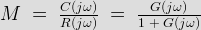
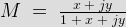
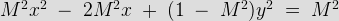
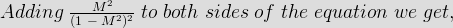

M circles are called constant magnitude loci while N circles are called as constant phase angle loci. At first we will discuss about the m -circles. The open loop transfer function G(jω) of a unity feedback control system is a complex quantity and can be expressed as,
G(jω).1 = x + jy


^2\; +\; y^2}}\cdot\cdot\cdot\cdot\cdot\cdot\cdot\cdot(i)")
On squaring both sides on the equation i and simplifying we get,

x\; +\; y^2}\; =\;\frac{ M^2}{1\;-\;M^2}")

![\left[( x\;-\;\frac{ M^2}{1\;-\;M^2}\right]^2\; +\; y^2\; =\;\left[\frac{M^2 }{1\;-\;M^2}\right]^2\cdot\cdot\cdot\cdot\cdot\cdot\cdot\cdot(ii)](7.png "\left[( x\;-\;\frac{ M^2}{1\;-\;M^2}\right]^2\; +\; y^2\; =\;\left[\frac{M^2 }{1\;-\;M^2}\right]^2\cdot\cdot\cdot\cdot\cdot\cdot\cdot\cdot(ii)")
For different values of M, the equation (ii) represents a family of circles with center at x = M2 / ( 1-M2) , y = 0 and radius as M /(1-M2). On a particular circle the value of M (magnitude of closed loop transfer function ) is constant, therefore, these circles are called M - CIRCLES. In G(jω) plane the Nyquist plot is superimposed on M-circle and the points of intersection give the magnitude of C( jω) / R(jω) at different values of ω.
The center and radii of M -circles for different values of M are given below in the following table :
M
Centre
Radius
0.5
0.33
0.67
1.0
infinity
infinity
1.2
-3.27
2.73
2.0
-1.33
0.67
3.0
-1.13
0.38
By the use of M circles the closed loop frequency response from the given open loop response can be obtained. The m circle tangential to open loop frequency response plot gives the maximum magnitude of the closed loop transfer function and the resonant frequency at this point is denoted as ωr. The max. magnitude is denoted as Mr. With the help of m circles gain can also be adjusted.
N circles
N circles are called constant phase angle loci .In view of eq. the phase angle of the closed loop transfer function of a unity feedback control system is given by,
∠ C( jω) / R ( jω) = ∠ x +jy / 1 +x +jy
The phase angle is denoted by φ is equal to tan-1(y /x) - tan-1(y /1+x)
Or , tanφ = tan [ tan-1(y /x) - tan-1(y /1+x) ]
Simplifying the above eq . we get , tanφ = y / x2 + x + y2 …………… (A)
Substituting tanφ = N in eq. (A) , N = y / x2 + x + y2
Or, y / x2 + x + y2 - y / N = 0
Adding ( ¼ + 1/4N2) on both sides of the above eq. we get ,
(x +1/2)2 + (y -1/2N)2 = ( ¼ + 1/4N2)………………(B)
For different values of N represents a family of circles with centre at x = -1/2 , y =1/2N and radius as √ ¼ + 1/4N2. On a particular circle , the value of N or the value of phase angle of the closed loop transfer function is constant, therefore, these circles are called N-circles.
The centre and radii for N circles are given below in the following table :
φ
N= tanφ
Centre
Radius
-90°
infinity
0
0.5
-60°
-1.732
-0.289
0.577
-30°
-0.577
0.866
1.0
0°
0
infinity
infinity
+10°
0.176
2.84
2.88
+30°
0.577
0.866
1.0
+90°
infinity
0
0.5
.
 by
by